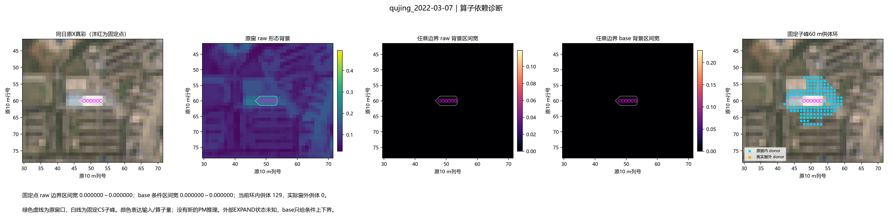
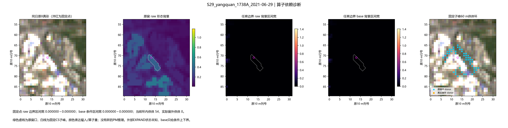
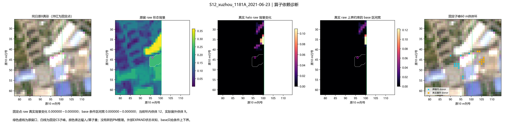
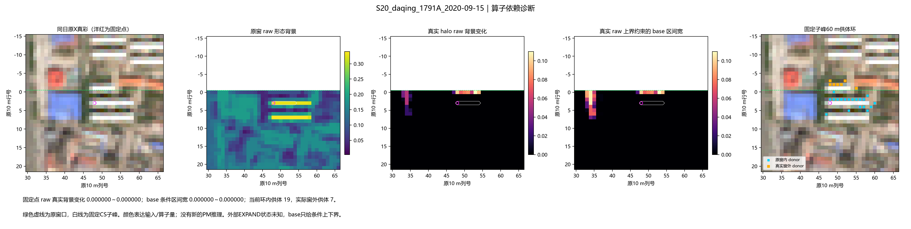
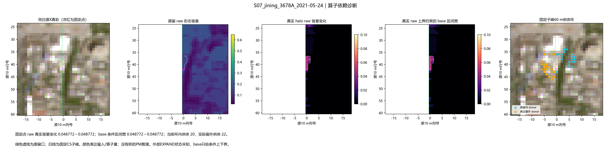
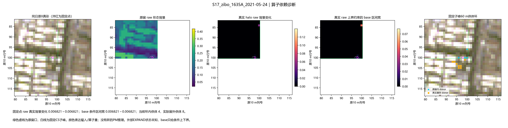

父域触边不等于局部修正依赖窗外
只检查真实输入、形态背景和供体，不新增PM推理。阳泉与徐州的局部背景稳定；济宁、淄博存在真实外沿依赖。大庆单景进一步检查供体缺口。
完整结果 · 原窗算子固定点 · 真实halo固定点 · 156场计数
R1 qujing_2022-03-07

MAP_MAX S29_yangquan_1738A_2021-06-29

R6 S12_xuzhou_1181A_2021-06-23

SMALL_LOSS S20_daqing_1791A_2020-09-15

HALO_JINING_MAY S07_jining_3678A_2021-05-24

HALO_ZIBO S17_zibo_1635A_2021-05-24
